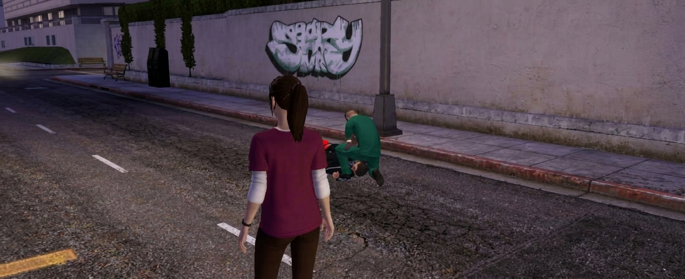
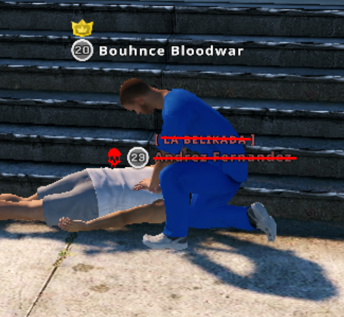
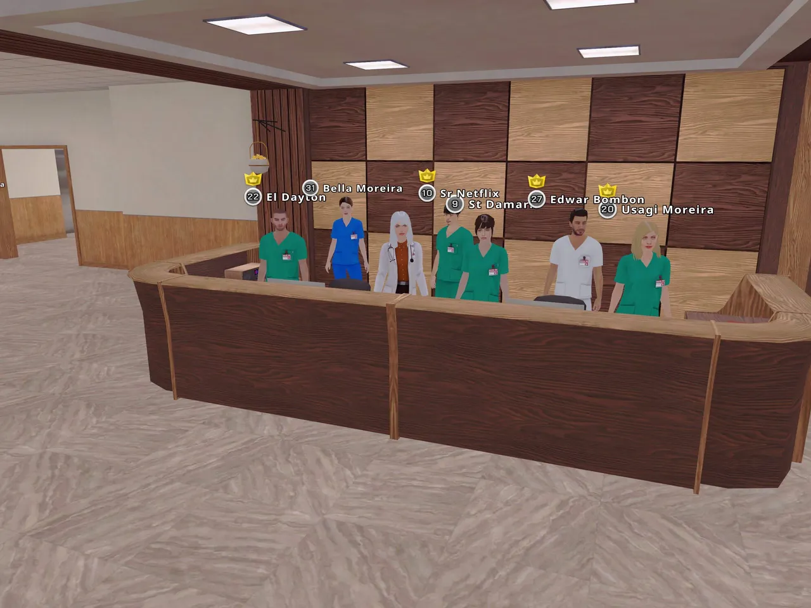

01
🎥 Prácticas de RCP
Evidencia de 6 prácticas de RCP entrenando a 3 batas verdes y 3 batas blancas.
Misma pasión · Mayor responsabilidad

Evidencia de 6 prácticas de RCP entrenando a 3 batas verdes y 3 batas blancas.

Hacer 15 RCP y presentar la evidencia de la tarea semanal.
🔍 Ver ejemplo

Vender 30 píldoras y presentar la evidencia de la tarea semanal.
🔍 Ver ejemplo

Listado de requisitos.
🔍 Tocá para verlo en grande